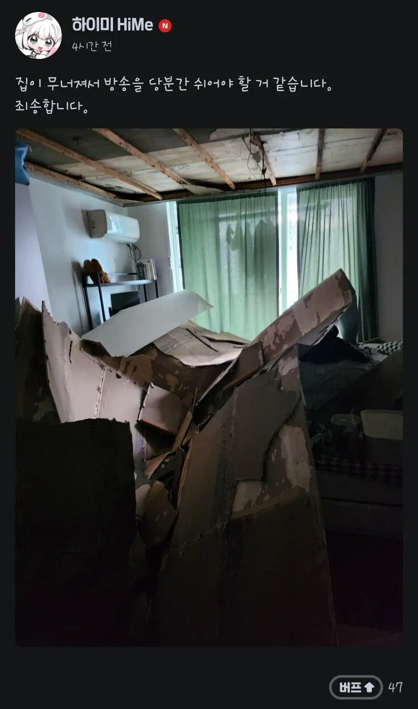
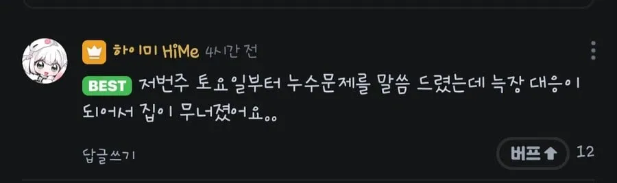

저쪽 집이 무너졌다길래 왐마 니미랄거 스액스 하러 글레같은 천장이 무너졌다 안카요!
오늘 내 단나사마가 무너졌어
대충 천장이 무너졌다안카요 어쩌구
와 남친 만날려고 천장까지 부시네
독하다 독해
스엑스를 하려고 천장까지 부쉈구나 이 글레가튼련
전국의 인테리어업자들이 숟가락 던질예정.
왐마 내 이런건 처음보네잉
남친 집에 가려고 집을 무너뜨렸구나!
글레가튼련 죠빻은련
하이미<->바이유
4일휴방은 실존한다!
와 휴방컷 ㅈㄴ 높네
오리고기도 최근에 천장무너지던데 버튜버들은 천장 왤케 잘무너지냐 ㅋㅋ
집이 그을레같아서 그래
방음부스 넣을 정도로 넓은 곳 찾다보면 금전적으로 부족해서 오래된 집으로 구하는 경우가 많음
와 저건 대체 얼마짜리냐 ㅋㅋㅋㅋㅋㅋㅋㅋㅋㅋㅋ
글레가튼
모니터 어케 살았누 ㅋㅋ
혹시 해서 치지직 들어 가 봤더니 24년에 게시했던 글이고 왜곡확산되고있어서 지웠네
버튜버만 적혀있으면 스엑스 글레가튼련이 툭 튀어나오네 ㅋㅋ
스엑스 좋아 글레 좋아
알아서 잘좀 해주셔~
수많은 왐마 니기럴거 댓글이 달릴 예정